The Proto-Langspil: Launching an Icelandic NIME Research Lab with the Help of a Marginalised Instrument
Abstract
Historically marginalised instruments witness and bear vital stories that can deeply affect identity and galvanise communities when revitalised. We present the proto-langspil as a contemporary interpretation of the langspil, an Icelandic monochord-like folk instrument, and describe its agential and performative contributions to the first Icelandic NIME research lab. This paper describes how the proto-langspil has served as an instrument in establishing the research methodology of our new lab and concretised the research agenda via a series of encounters with music performers and composers, luthiers, anthropologists, musicologists, designers and philosophers. These encounters have informed and challenged our research practices, mapped our surroundings, and embedded us in the local social fabric. We share our proto-langspil for replication, and reflect on encounters as a methodology framing mechanism that eschews the more traditional empirical approaches in HCI. We conclude with a final provocation for NIME researchers to embrace AI research with an open mind.
Author Keywords
Langspil, decolonialisation, encounters, agency, feedback, intelligence, methodology, lab report.
CCS Concepts
•Applied computing → Sound and music computing; Performing arts; •Information systems → Music retrieval;
Introduction
The Intelligent Instruments Lab,1 hosted by the Iceland University of the Arts,2 began activities in September 2021.3 We focus on the function of musical instruments imbued with intelligence: how these objects change the way we think about and perform music, particularly considering the intense and personal relationship we have with them. An important aspect of the project is to study the emerging discourse around these new instruments, and our programme involves development, user studies, Open Lab events,4 and live performances. These encounters allow us to obtain and share knowledge about the perception of new intelligent instruments.
Setting up a new lab is a complex task, involving physical space, work practices and the social dynamics between researchers and collaborators [1]. Modularity and dynamic structures are key goals in our work, equally in how we organise our space, work together and with others, and design instruments. We began our research by designing an instrument as a prototype for our research methodology. Although we are also working with existing instruments, such as the halldorophone [2], Magnetic Resonator Piano (MRP) [3] and the Linnstrument [4], we decided to develop a new prototype as a probe [5] that would set in place the way we brainstorm, contextualise theory, streamline technical work processes, and engage with project collaborators. Simultaneously, we designed our lab furniture as infrastructure (Image 1) that can also become a musical instrument, with strings and other technical elements attached.

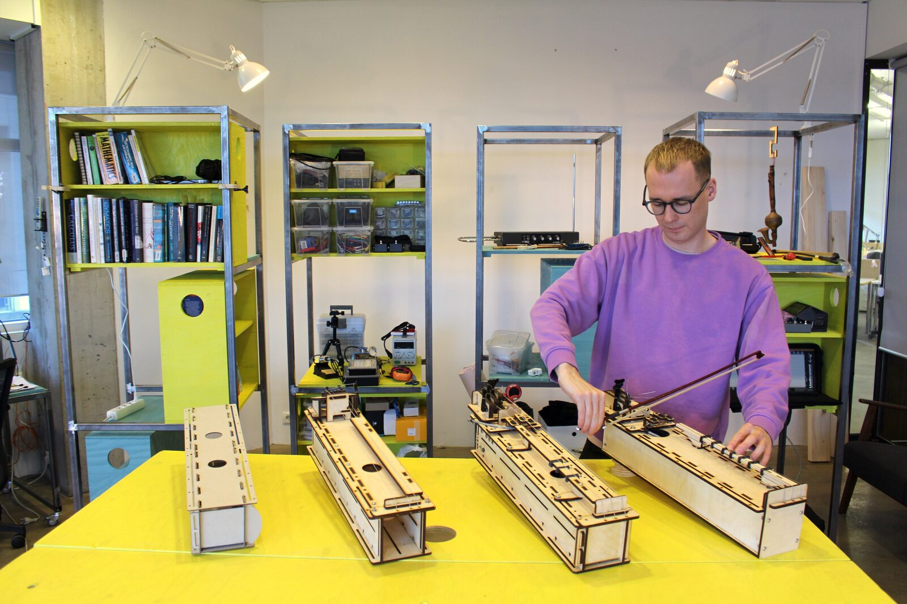
Four iterations of the proto-langspil from left to right, showing the instrument in-situ among the modular furnitures of the lab, where this work’s various encounters took place.
Like Pythagoras, we began our work with the vibrating string. The string is, of course, a key sound source of musical instruments all over the world, with qualities such as regular harmonics, flexible pitch and filtering through the physical body to which it is attached. It is a technical element that has been with us for millennia, but our understanding of it is continually developing, demonstrating how knowledge often lies outside the theoretical realm and is embedded in our designed objects [6][7]. Our intent was not to design a new and better string instrument — there are plenty good ones already! — but to bring all our attention to a focus on the properties of one string. This focus on the string is no coincidence: the monochord has served as a scientific instrument in physics and music theory since the start of writing, with the ancient Greeks famously developing their understanding of rational numbers, and geometry using the string as an epistemic tool [8]. We set out to continue this tradition with current technologies in artificial intelligence and dynamical systems.
Background
The Langspil
The monochord exists in most musical cultures, suffice to mention the kanon (or “law”) in classical Greece, the Middle Eastern qanun (also “law” in Arabic), Japanese koto and Indian vina where it often appears with more than one string [9]. The Icelandic version of the monochord is called langspil. The instrument has one to six strings, where some are used as drone strings. In earlier instruments, the fingerboard typically used a diatonic scale tuned in just intonation (Image 2). This led to it being considered an imperfect instrument by musicians accustomed to the equal tempered piano, and described as “intolerable” in the early 19th century. Soon after, langspils began to be made with chromatic fingerboards under the influence of Icelandic students bringing music theory back from their studies in Europe, mainly Copenhagen ([10], p 122-124).

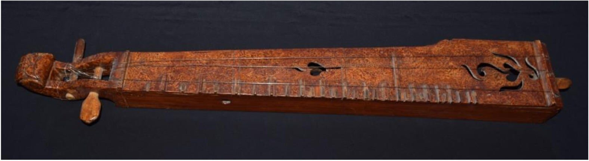
Langspil owned by Hilmar Örn Hilmarsson (see Eyjólfsson, p.84).
The langspil’s history is somewhat muted and covert. It is centuries old and of unknown origin but has seen a revival in recent years, with our collaborator Eyjólfsson contributing a thesis [11] and programme where Icelandic school children build and play the langspil. Eyjólfsson advocates that the langspil be revived and re-contextualised, stating that the “instrument that used to resonate in the dark living rooms of the countryside [Image 3] now typically resides in glass cubicles soaked in fluorescent lights” [11] of museums. The Icelandic langspil was marginalised by the hegemony of Danish culture in many ways akin to how the Basque txalaparta was by Spanish culture.5 We have earlier worked on the reinterpretation of traditional instruments in the contemporary technological context and in the Digital Txalaparta project [12] we see a traditional instrument with similarly murky history revitalised by experimentation. One of our expert langspil collaborators warned that novel intervention can “easily pave over” the older tradition, whilst another pointed out that the langspil “doesn’t belong to any tradition, and that it shouldn’t belong to one, because there is none.” We encourage people to collaborate closely, listen carefully, and tread softly with respect into areas like these.

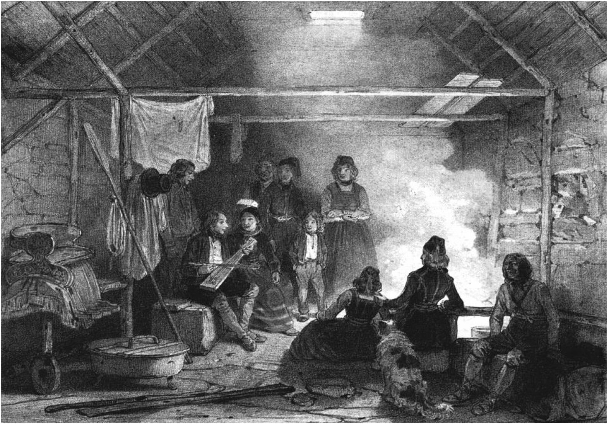
Evening at Grímsstaðir Guesthouse in 1836 (see Eyjólfsson).
Feedback Instruments
Feedback has been a technical means in lutherie since the advent of electric instruments. In the 1950s and 60s feedback become a conceptual focus, inspired by developments in cybernetics. The ideas of Ashby, Bateson and Wiener were picked up by artists around the world and cyberneticians such as Gordon Pask6 also engaged in artistic productions. Artists began to work seriously with cybernetics, for example Bebe and Louis Barron [13].7 Composers including David Tudor, Max Neuhaus, Eliane Radigue, John Cage, Robert Ashley, and Alvin Lucier experimented with feedback in their music. It also became iconic in popular music via for example the performances of Jimi Hendrix.
A recent example is the halldorophone [2], a cello-like feedback instrument offering detailed control over each of its eight strings, which are amplified and returned into the body via transducer. The proto-langspil employs the same method to both “play itself” and respond in a nuanced way to the player. By varying these in different measures, we can sidestep definitions of intelligence to focus on how players perceive agency in an “intelligent instrument”.
Intelligence and Agency
Our current approach to intelligent instruments is broad and not confined to the latest developments in deep learning, although this would be included. We are rather interested in looking at intelligence from the perspective of the performer, asking under what conditions does a human performer attribute intelligence or agency in a technical object, such as a musical instrument? From this perspective, many of our historical musical instruments are already intelligent, but when their internal states can be autonomously and dynamically transformed, we see a jump into a new world of possibilities that extend the instruments’ current potential.
The instrument we used in our initial investigations is described in the next section. The proto-langspil is a platform where we explore the socio-technical implications of creative AI applied to physical musical instruments. We are exploring how machine learning can be part of the ecosystem of embedded AI, with implications on how we would implement these processes on the halldorophone and other instruments, where creative AI can be part of the signal chain. From this perspective, the proto-langspil connects us with input from experts and becomes a platform where we investigate how simple changes to software can get people to attribute agency to an object, and begin to study of anthropomorphic language around technical objects.
Instrument Design
The proto-langspil was designed with considerations of openness, potential for augmentation and customisation, and ambiguity of function. Its aesthetic is unfinished [14], prototypical (hence proto-langspil), and technologised compared to a traditional langspil (Image 4). We un-crafted [15] the langspil to make it conceptually, musically and technically malleable [16]. It was still meant to be recognised as a langspil to a familiar Icelandic audience, so as to provoke re-thinking of the instrument’s potential. One reason for designing such an instrument was to refrain from any imaginary musicality that established instruments connote: it is well known how instruments carry particular cultures and skills of playing. The proto-langspil presented a unique chance to present players with an object that carries very little cultural and historical baggage, and with references to a historical instrument that most Icelanders are only vaguely aware of. Parts list, detailed build instructions, design files and software can all be found at a repository.8

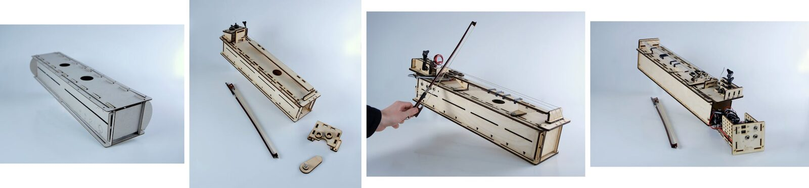
Four iterations of the proto-langpsil. From left to right: to scale annotated cardboard model, first wooden version with early tuning peg holder design, build used in Encounters 1 and 2, and refined version used in Encounter 3.
Interactive display of the Fusion 3D0 model of the assembled proto-langspil used in Encounter 3. Design files can be found in the project repository. Link: https://myhub.autodesk360.com/ue2ac94e1/shares/public/SH9285eQTcf875d3c539b273ed6d40e3a4e6?mode=embed

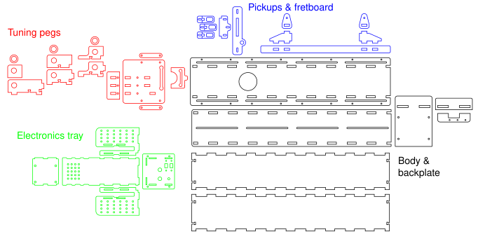
The proto-langspil’s 2D geometry, grouped by sub-assembly.

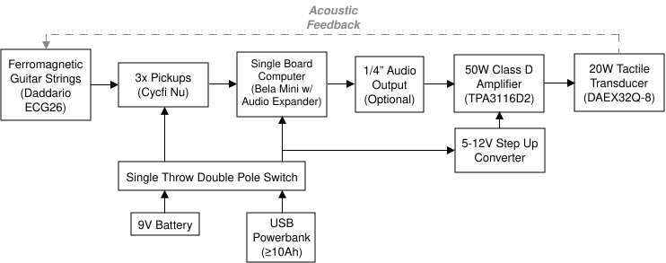
System diagram of the proto-langspil.
The proto-langspil was designed in the Fusion 360 3D software package (see iframe embed above) and laser cut in 3 and 6mm thick birch laser plywood (laserply). It has a fingerboard with moveable frets for the melodic string and two additional sympathetic drone strings (Image 5). The frets are UV resin 3D printed. Three Cycfi Nu pickups are placed under each string and routed to a Bela Mini for digital intervention (Image 6). The processed signal is routed to a power amp feeding into a tactile transducer built into the instrument, and there is a patch-out (full normalled, 1/4” jack) of the master signal before it reaches the power amp. A volume pedal can then control the master signal feeding back into the instrument, which is an important control parameter allowing for further audio processing.
The instrument has slots for easy mechanical fitting of brackets to hold external modules for interaction with the strings (e.g. eBow, more pickups, automated plectrum). We limited the physical dimensions of the instrument to the size of 110 Eurorack HP (horizontal pitch units, approximately 559mm) with Eurorack mounting holes, to invite signal chain experimentation with modular synth systems. We applied software between the pickup and transducer to affect instrumental behaviour. This differed between the various encounters described later, where software design descriptions are provided.
Methodology
Our design process involved discussing basic elements with collaborators in computer science, philosophy, musicology, and cultural anthropology, conscious of the performative nature [17] of lab work, mindful of social relations [18] and the politics of technical decisions [19]. Treating our lab as an experimental system [20], the development of the proto-langspil became a method of formalising our working methods. We also hosted weekly Open Lab sessions, where anyone could join for discussion, allowing us to externalise our thinking and work-in-progress. To us, these activities made the proto-langspil a “boundary object” [21], a term standardising how researchers from different disciplines, or social worlds, can collaborate in research through a grounded platform.
We apply phenomenological methods in our study of musical instruments, and are interested in the language that people use to describe their experiences. This is centred around our notion of the encounter, described by Deleuze as “[s]omething in the world that forces us to think,” [22], a phenomenon that is prior to cognition of recognition, an object that evokes imagination, sensibility, memory, and thought. We are interested in this unique moment when a person encounters a new instrument for the first time; grasping, feeling, touching, listening, and building a mental map of its ergodynamics [23]. We emphasise this framing to acknowledge the particular unease in the NIME community towards typical user study schemes common in HCI, that do not reach deep enough with issues of culture, aesthetics, history and trans-ergonomic design [24].
Our encounters were designed to perform broad initial explorations of major research questions and themes of our lab. We sought different types; brief versus long, controlled versus in-the-wild and open-ended. We also sought to iterate on the proto-langspil as a platform for AI experimentation. These encounters fell into four groups numbered E0-E3, which are described hereafter:
E0: With academic collaborators and participants of our Open Lab on a Friday afternoon with early non-functional proto-langspils.
E1: Between six musicians and the proto-langspil in four different software configurations, in a timed exploration format, followed by a survey.
E2: Between six different musicians, the proto-langspil, and a video and score of a short composition for the instrument. Musicians were given 25 minutes to explore the instrument and try to reproduce the piece.
E3: Between three musicians and the proto-langspil, in a take-home format, where they could work with the instrument over a two week period.
Encounters
Encounter 0: Open Labs and preliminary discussions
Our first meeting with the instrument was when Úlfarsson made a prototype in bookbinding board. Discussions involved size, shape, cultural connotations, modularity (how does the instrument fit with other systems, for example Eurorack?) and feel. Following this, we assembled the instrument in laserply, with strings, fretboard and tuners. In our Open Lab we would present the instrument to our visitors (Image 7), noting comments and learning from their insights. For us, this demonstrates how the emphasis on formal approaches can exclude various valuable information.

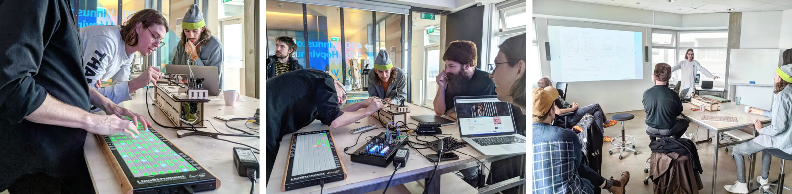
A proto-langspil being encountered during one of our Open Lab sessions.
We also presented the work to professional luthiers Hans Jóhannsson, an expert violin luthier, and Eyjólfur Eyjólfsson, a langspil luthier and an anthropologist of music. For us Jóhannsson’s comment that “the instrument body is just a filter” for the string was quite enlightening and inspiring thinking of how to shape that filter with materials and algorithms. Eyjólfsson’s was interested in cultural implications, and how proto-langspils could be incorporated into the tradition. Folk musician Linus Orri also contributed valuable insights into tunings, scales and historical developments of the instrument.
Encounter 1: Exploration of instrument behaviours
In this encounter, we were interested in exploring what the notions of “agency” and “intelligence” mean to people in the context of musical instruments. Musicians briefly explored an updated proto-langspil (Image 8) with four different software settings (S1-4) representing different qualities of agency, each implemented as a SuperCollider synth9 (Image 9):
S1: no runaway feedback, just an amplified string instrument; responds only to the player.
S2: stable droning feedback; can be muted by the player and responds in a fairly deterministic way to playing.
S3: unstable feedback with complex pitch-shifting; can be influenced by the player but only partially controlled.
S4: silent when plucked, chaotic when touched and feedback when left alone; resists the player.

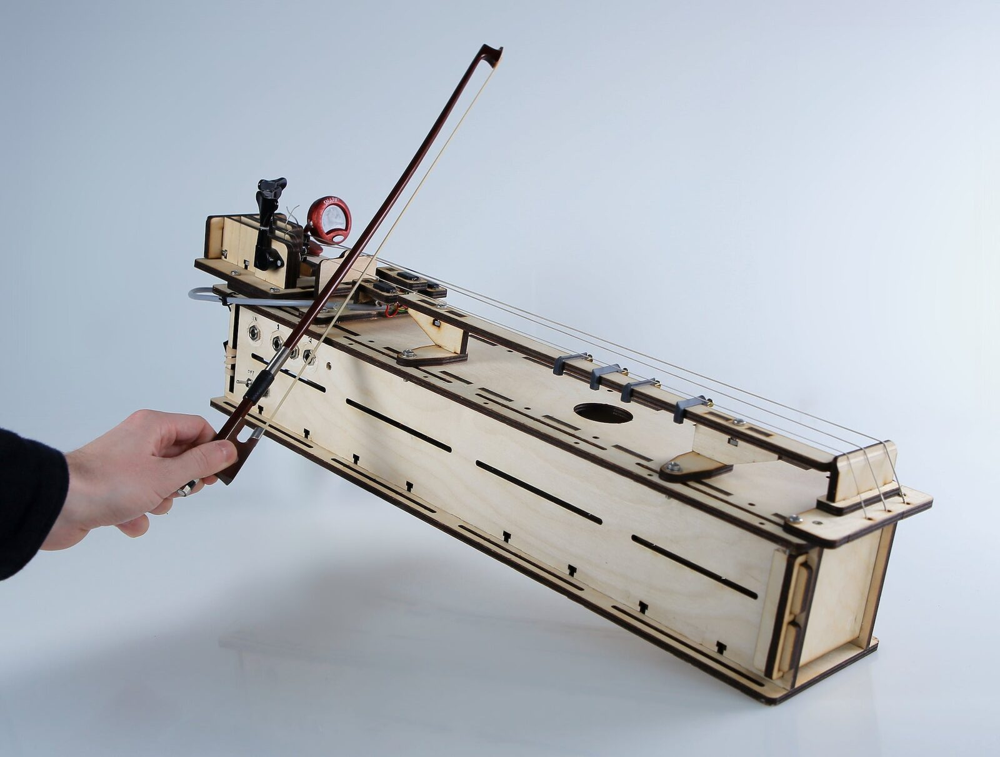
The proto-langspil used in Encounters 1 and 2, featuring the same overall body, and updated designs for the tuning pegs, pickup mounts and fretboard.

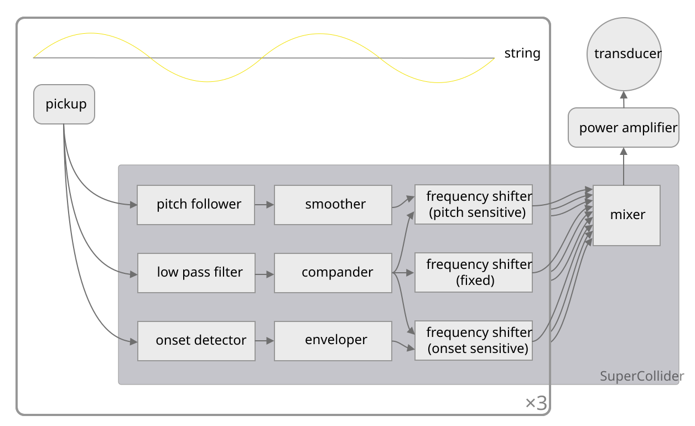
Block diagram of the proto-langspil electronics used for Encounter 1. For more details, see our git repository at https://github.com/Intelligent-Instruments-Lab/proto-langspil
Six local musicians were filmed playing the proto-langspil and answered a survey. Each musician had three minutes per setting, and three encountered the settings in reverse order (S4-1). They answered a Likert scale questionnaire, asking them about the felt sense of agency (Image 10). Though not statistically significant, we can make several qualitative observations consistent with the data. Some participants immediately began making music, some methodically explored the affordances of the instrument, and some attempted to reverse-engineer it. Participants generally reported feeling immersed in the task (Image 10, bottom left).

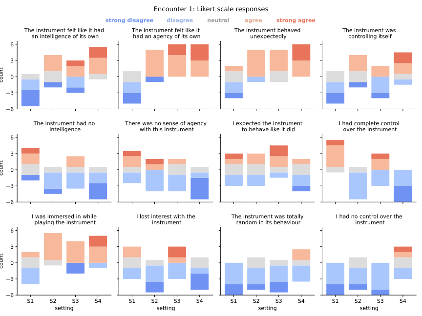
Likert scale responses to each question for each instrument setting in Encounter 1. Area of bars corresponds to number of responses. For example, all 6 participants “agreed” or “strongly agreed” that S4 “behaved unexpectedly” in the upper right subplot.
We were enquiring if our intuitions about the degree of agency between settings would be validated or challenged by the participants. Evaluations of statements ascribing intelligence, autonomy, self-control and surprise instrument did appear to vary positively with the setting number, and their opposites negatively. Participants mostly agreed they were in control of S1, which was not controlling itself (Image 10, rightmost column). Meanwhile, participants agreed that S4 had “agency” and “intelligence” (Image 10, top left).
We judged S3 to have greater agency than S2, and this was borne out by participants’ answers (Image 10, second column). However, the relationship between S2 and S3 was unclear or reversed for the questions about “intelligence” and “control”. The former provoked wide disagreements: E1P1 strongly agreed that S3 “had an intelligence of its own” while E1P6 strongly disagreed; E1P3 strongly agreed that S1 and S2 “had no intelligence” while E1P1 strongly disagreed. This seems to suggest either different experiences by different participants, or disagreement about what “intelligence” means. Nevertheless, we found broad similarity between the responses on intelligence and agency, with a strong correlation between responses.10 This is unsurprising given that participants were offered little time to consider their own definitions of “agency” and “intelligence”. E1P5 put it: “I had such a hard time really pinpointing what was meant with that [agency] … are you asking me ‘How much AI is going on in this setting?’”
This encounter validated our most basic assumption: that a passive instrument which reacts transparently to touch is perceived as less agential than one which reacts in a surprising and oppositional way. But between these extrema, the picture is more complicated. The methodology of this encounter—comparing between instrument behaviours with varying agential qualities—looks promising. However, improved survey instruments and experimental design will need to pull apart nebulous terms like “intelligence” and “agency” into the specific, and culturally situated, behaviours which constitute them.
Encounter 2: Learning a short composition
Another theme of our research is the impact of agential instruments on embodied musical skill acquisition. To investigate this, a second pilot study was designed where musicians would explore the instrument for 10 minutes, and subsequently learn and reproduce a short composition by Davíð Brynjar Franzson for up to 20 minutes. A software setting similar to S2 and S3 from Encounter 1 was used, with tweaks by the composer, who was asked to focus on simple techniques, of which four were demonstrated:
TL1: Muting a drone string at a harmonic node with the thumb of the left hand.
TL2: Fretting the melodic string with a single finger of the left hand.
TL3: Fretting the melodic string with two fingers of the left hand simultaneously.
TR1: Pitch-bending the melodic string behind the bridge with a finger of the right hand.
The piece alternated between a two-hand technique (TL1 + TR1) and a left hand technique (TL2 or TL3). TL1 and TR1 were explicitly annotated in the score (Image 11). Six local musicians, none of whom participated in Encounter 1, responded to a call to play the proto-langspil. A video performance was projected onto a wall, and a printed score was provided. A short discussion took place afterwards, enquiring about the experience.
Video: Untitled Study for proto-langspil, Davíð Brynjar Franzson, Dec 2021. https://www.youtube.com/watch?v=wFPbAjIQr98

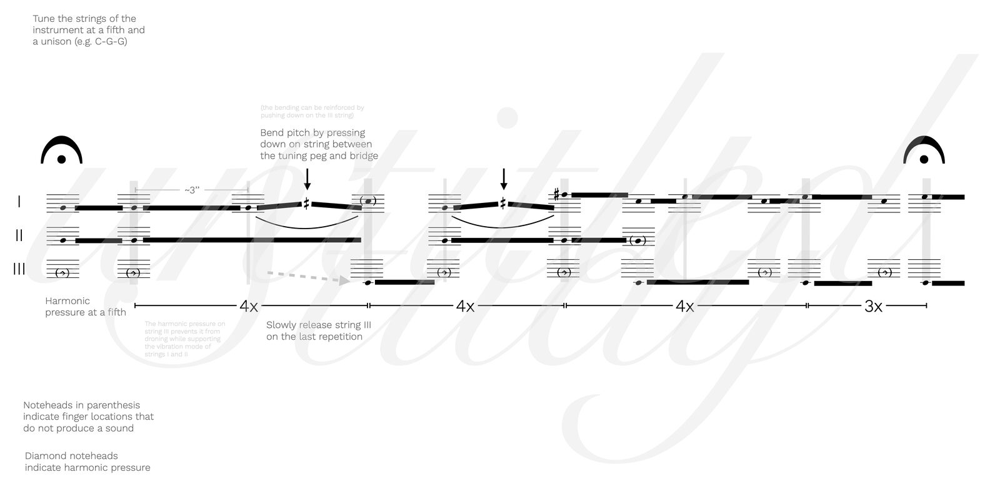
Score for Untitled Study for proto-langpsil by Davíð Brynjar Franzson, 2021.

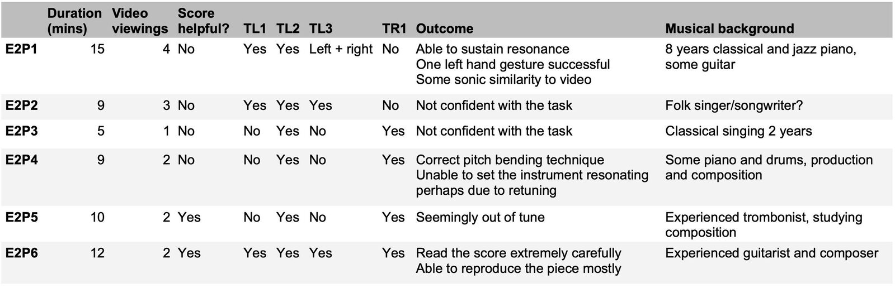
Table of outcomes for Encounter 2 with columns for play duration, number of video viewings, helpfulness of the score, demonstration of the composition’s techniques, and a summary of musical outcomes and the participant’s musical background.
Outcomes are recorded in Image 12. All musicians chose to end the task before the 20 minutes were up. Several video issues interfered with learning the piece:
The instrument was self-resonating from the beginning, but this was not notated in the score, nor was it obvious how to reach this initial state.
The viewing angle of the video relative to the instrument made it difficult to see the individual strings.
The instrument was set up on a table, which increased lower frequency resonance which the participants could not replicate.
Two participants were able to mostly reproduce the piece: E2P1 spent longest on the task and viewed the video the most times. E2P6 studied the score for the longest time and was the only participant to reproduce all four techniques. E2P4 and E2P5 chose to stop due to issues 1 and 3: “It feels like I’m playing another instrument than in the video in a way […] You have to wait for this vibration to start.” E2P2 and E2P3 were not confident with the task, pessimistic that they would learn the piece in the time provided. E2P2 mentioned: “This is my first kind of non-traditional score […] it would take me a bit more time to get the hang of it.”
Several participants described an initial sense of failing to understand the instrument giving way to more direct engagement. E2P2: “First I thought I’m not understanding this […] but then I stopped thinking about that and tried to listen for the sounds and that’s when I started to get more into it.” E2P3 recounted a sense of dialogue with the instrument: “I was like ‘I’m probably not doing this right’ […] but after a while I realised that it was answering back to me.” Participants also remarked on an impression of variety or nondeterminism, E2P4 positively (“it was interesting that [tapping the strings next to the bridge] was different each time”) and E2P5 in reference to task difficulty (“It was hard to imitate [the proto-langspil] because it makes different sounds, it’s really independent”).
These comments suggest that playing an agential instrument is about feeling patterns in complex behaviour, distinct from traditional instruments with more fixed behaviours. Despite this, our learning task rewarded a careful analysis of the video and score, while confounding a more embodied approach. This encounter was about embodied skill acquisition, but skill can only exist within the context of a practice, something that does not exist for most NIMEs. The composition in this encounter represented the beginnings of a proto-langspil practice, from which we deduced some skills. However, these were not explicit enough in the materials to make evaluation of learning possible. To improve this encounter, we would make higher quality pedagogical resources for these skills, so that detailed study of learning with agential instruments can take place.
Encounter 3: Take-home for artistic practice
Based on feedback from Encounters 1 and 2, three more proto-langspils were built (Image 13) and loaned to three participants for them to explore musically, dubbed E3P1-3 in this Encounter. Two were participants in Encounter 1 (E1P1, E1P4) and the third was an author of this work. E3P1 was selected due to being a multi-instrumentalist string player and a folk musician. At their request, E3P1’s proto-langspil was modified to be playable in an upright position like a cello. E3P2 was selected due to being an electric langspil maker themselves, and an expert on Icelandic folk music. E3P3 was selected so that as authors we would have direct artistic engagement with the proto-langspil. At the end of their take-home periods, each participant visited the lab to share improvisations, and to discuss and reflect on their experiences.

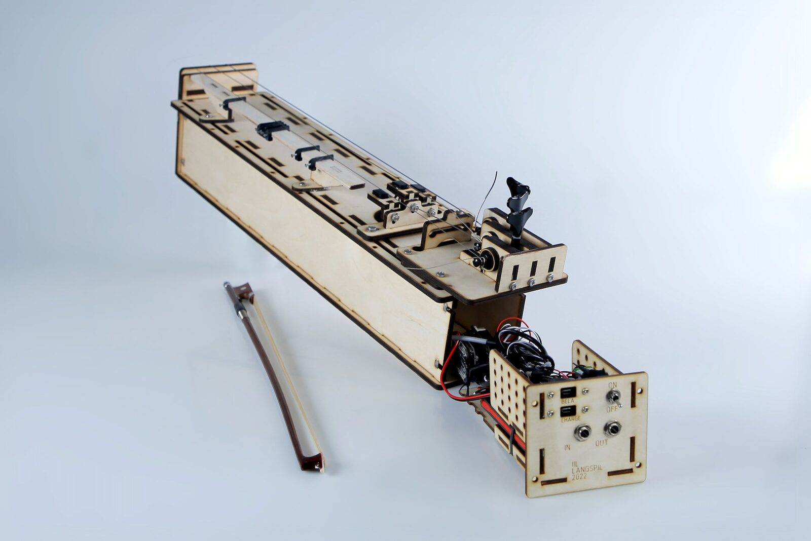
One of the three proto-langspils used in Encounter 3, a self-contained design with code running on the Bela Mini single board computer.
E3P1 improvised once with frets and once without, and interpreted the traditional Icelandic lullaby Móðir mín í kví, kví at our suggestion. They also improvised on an ad-hoc basis with an additional proto-langspil wired into the feedback loop, about which they “felt intrigued, excited, curious, a bit intimidated, confused” afterwards. E3P1 described that with two proto-langspils, “the instrument was completely leading, I was the second player”, and that “it did what I do, which is it follows me for a bit and then it gets bored and does something else”. When the feedback amount (controlled by foot pedals) was at its maximum, they described the proto-langspils as “self-assured” and “independent”, and they turned this down at points “for my own expression”. They saw a traditional langspil as “at your disposal”, serving the player, versus the two proto-langspils which were “more collaborative” and didn’t “need” the player to make sound.
Video playlist of five proto-langspil improvisations by E3P1; with frets, without frets, playing the lullaby Móðir mín í kví, kví, with two proto-langspils, and with two proto-langspils and two foot pedals. https://www.youtube.com/watch?list=PLTl_xbaxkOhrAs3FvQ0TfxIGi_LV9GKk4&v=JeRJSYMt0w8
E3P2’s musical practice was limited by the frets (“too much variability”) and speaker (“I wanted to hear a fuller sound”), and they couldn't “make it interesting enough” without guitar pedals. As a luthier however, they were inspired by aspects the proto-langspil’s baroque bridge (“a really smart way to solve the problem of wanting to be able to play each string individually”) and the combination of a hollow body with electric pickups. Notably, when their proto-langspil’s code was explained to them, E3P2 declared “it’s not AI, it’s not intelligent […] it is mechanical”. For E3P2, the proto-langspil “serves a completely different purpose” to others, and “you could just turn it on and listen to it”. Comparing to other langspils, they commented that the proto-langspil “is so alien, so obviously new, it’s so obviously experimental that you’re not gonna step on any toes”, acknowledging despite this that we “could totally have done this without consulting anyone, but you are”.
Video of E3P2’s proto-langspil improvisation with electric guitar pedals. E3P2’s own electric langspil can be seen on the table, front-right of the video frame. https://www.youtube.com/watch?v=TQ91WnTKSko
E3P3’s experiments with the proto-langspil involved reprogramming it in SuperCollider. At one point they expressed wanting “to let the instrument be, and control it from the code […] to just have minimum interaction with it”, but also described “the fun of tuning the fretboard into different tunings. Moving the frets around”. E3P3 also gave an improvisatory rendition of Móðir mín í kví, kví. Despite their intimate familiarity with the workings of the proto-langspil, E3P3 retained the impression “that the instrument was alive”, writing that “Pickering’s [25] phrase of ‘dance of agency’ plays well here, where the music would be not mine, not the instrument’s but something that happened as a result of the interaction.” Compared to other digital-acoustic instruments, E3P3 wrote that “what made the experience with the proto-langspil quite unique for me was its ‘standalone’ nature, there are no soundcards, laptops or cables around.” They further identified the potential of AI instruments in “objects that behave unpredictably, yet [are] shapable and controllable”.
E3P3’s improvisation with SuperCollider code they modified themself. https://www.youtube.com/embed/bFKR8ymROq0?feature=oembed
We noted a sharp contrast between E3P1, who anthropomorphised the instrument and approached it on its own terms, and E3P2, who tried to infer how it worked and tried various strategies to get the desired behaviour from it. E3P3 (of course quite invested in the project) seemed to bridge both attitudes, embracing the instrument as agential despite the total lack of mystery from their vantage.
Discussion
Though embedded feedback instruments already existed prior to this work, such as the Piezothing,11 to our knowledge our proto-langspil is the first such instrument to be published as open source, and designed to be maker-friendly and modular from the start. In this regard, we align our work with those calling for more replicability and better documentation of NIMEs [26] [27]. Future work could involve assessing the proto-langpsil’s technical replicability [28] and any maker ecology that develops around it [29]. However, in this work we mainly prioritised minimising risk towards the langspil tradition, about which Eyjólfsson commented: “there is no danger [with the proto-langspil] because as I see it, cultural heritage is something for us to play with, recreate, and the more alien landscapes we make the better.”
Looking across our encounters, E3P1’s experience of the proto-langspil’s frets suggests that, where an instrument is only partially agential, its features could be divided into agential and non-agential categories, and the balance between these might be connected to perceived agency as investigated in Encounter 1. In terms of Encounter 2, E3P1 took the instrument the furthest in terms of musical practice: studies of E3P1’s embodiment, or of others learning from them, might be possible in future. E3P2 was influenced by the proto-langspil’s physical features but not its software; understanding what the code did changed their perception greatly. Together with E3P3’s experience as a coder, this suggests that it is important to account for the relationship between the perception of an agential instrument, and the level of understanding about it.
We explored the proto-langspil as a boundary object [21], and doing so has given us insights from a wide variety of perspectives early in the proto-langspil’s development. Combining small scale studies and “art-research inquiry” [30] in our “machinic encounters” [31] has allowed us to begin to see promising connections, between the music interaction affordances and sensorimotor disruptions [32] of nonlinear dynamics [33][34], and their impact on advanced skill learning [35], AI mind perception in the case of E3P1 [36][37], and AI expectation violation in the case of E3P2 [38]. However, we did so in only very short glimpses, and with an extremely limited vocabulary.
Our own luthier, Halldor Úlfarsson, has reflected upon this in their work for over a decade in developing halldorophones [2]. Úlfarsson has favoured a method of prolonged encounters with their instruments, leaving them with musicians to become familiar with in their own setting, often for months and years. For him, the most meaningful insights about the halldorophone have come from users who work with the instrument for more than a year. Úlfarsson observes that it takes a while for musicians to stop looking at the luthier for cues about what a new instrument is and start looking at the instrument itself, at which point you sense a shift in confidence from the musician in their stated intuitions and feelings about the instrument and they give you more meaningful information. As lutherie itself takes time and perseverance [39], it is clear that if we are to design agential instruments we need this kind of long-running conversation with musicians and composers. We therefore see the need for more longer durational encounters in our work, as our lab progresses.
Though this paper has reviewed multiple small scale encounters with differing agendas, since we are a new lab, our main question has been “how does one research intelligent instruments?” Technological challenges aside, we believe the qualitatively different and divergent expectations that people have about intelligent instruments makes this research deeply complex. Although NIME evaluation studies require informed consent from participants, it is nevertheless typical to present NIMEs without explanation so as to “control” aspects of user perception, for methodological reasons. We encourage the NIME community to reflect on and revise the scientific, ethical and moral justifications for these practices when it comes to agential and intelligent instruments. As an emerging technology, AI is present in the public conscious in an unprecedented way, and everyone has experience-backed questions, doubts, hopes, and fears about it [40]. Instead, why not design explainable, interpretable and self-revealing intelligent instruments [41], and include this in their evaluation?
Conclusions
The proto-langspil has provided a shared focus to lab members and served as a boundary object that has shaped the interdisciplinary work practices of our lab. Kick-starting a lab with a project that involves collaborative ideation, building, coding, testing, engaging with users, composers, performers, and academics has enabled us to test and define our collaboration interaction protocol and refined the way we work with external partners. The instrument has served as a platform for both theoretical work in the phenomenology and perception of musical instruments as well as technical work in fablab technology and embedded AI.
The first sessions when people first encountered the proto-langspil gave us methodological insights into how to develop user studies of new musical devices through these encounters. We emphasised discussions, explorations, testing, performing, and learning from each other as the instrument developed day-by-day. Furthermore, the materiality of the instrument and its electric components shaped our ideas as much as our conversations with visitors. We note the importance of performance, practise, and development of the instrument by the researchers themselves for deeper understanding in interpreting study data. Only through deep engagement with the instrument is it possible to ask questions that make sense to the users and are actually coupled to the way the instrument works. Our encounters are a methodological stage that will later support more formal user studies, and it is our conviction that to produce a useful user study which closely fits the instrument and the ideas it embodies, these encounters are necessary.
Finally, working on a traditional instrument has been a rewarding approach for us in the lab. It has connected our work to the cultural imaginary of the langspil, reaching back to its obscure past and into the undefined future. By working on an existing instrument, implementing intelligent and agential behaviour, we have met key people in the community and contributed to the ongoing revival of the local folk instrument. We emphasise the respect and sensitivity required in order not to overwrite or step on the toes of tradition, the importance of listening to experts, to the instrument, to the past.
Acknowledgments
This work has been a collaborative endeavour by all lab members, from initial instrument design to writing of this paper. Roughly speaking, Thor Magnusson arranged and hosted the discussions with langspil experts, Halldor Úlfarsson designed and built the proto-langspil, Victor Shepardson created the proto-langspil’s software, and Jack Armitage designed the encounters and edited the paper.
Thanks to Hans Johannsson, Linus Orri Cederborg, and Eyjólfur Eyjólfsson for langspil consultation. Thanks to Davíð Brynjar Franzson, Eydís Kvaran and Linus Orri Cederborg for proto-langspil artistic evaluation. Thanks to our Open Lab attendees and encounter participants for invaluable insights and humorous comments.
The Intelligent Instruments project (INTENT) is funded by the European Research Council (ERC) under the European Union Horizon 2020 research and innovation programme (Grant agreement No. 101001848).
Ethics Statement
This project is funded by the ERC and before embarking upon our study we sought ethical clearance from the Icelandic Science Ethics Committee. The committee considered our research questions, methods, recruitment strategies, and treatment of personal data. In the study we sought to maintain diversity and equal representation. We recruited participants for the study from a group of people who had been attending our weekly Open Lab sessions on Friday afternoons, so they were familiar with the lab and its people. Study participants were given information and consent sheets to sign and it was made clear to them that they could quit the study at any point in time. All personal information is kept safely and anonymously.
The proto-langspil has been released as open source, including the files for laser cutting the instrument, the electric schemata, the technical spec and the software patches on the embedded computer. All composed scores for the instrument will be released on the instrument’s webpage.
Footnotes
- ↩
- ↩
- ↩
Every Friday afternoon, we open the doors to our lab for anyone to join us for coffee, discussion, talks, demos and more. An archive of themes and guests can be found at https://iil.is/openlab.
↩The colonial histories of Iceland and the Basque Country are complex and somewhat different to the more familiar colonialisms of England and France. It is outside this paper to discuss the nuances of suppression and marginalisation of instruments and indigenous musical traditions.
↩see for example his installation at the 1970 Cybernetic Serendipity exhibition at the ICA in London.
↩The Barrons famously turned Wiener’s circuits literally into musical organic beings, and made a sci-fi soundtrack out of them dying.
↩Author’s note: open source licenses will be added soon, probably CERN OHL2 and MIT: https://github.com/Intelligent-Instruments-Lab/proto-langspil
↩SuperCollider ran on a laptop connected discreetly to the instrument via cables under a table.
↩Responses to each positive question (e.g. “the instrument had an intelligence of its own”) were concatenated with the negated responses of the opposite question (“the instrument had no intelligence”). Participant identity was controlled for by subtracting the mean over setting for each (question, participant) pair, treating the Likert scale responses as integers. Kendall’s rank correlation coefficient was then computed between the resulting series for “intelligence” and “agency” questions (τ = 0.585, p < 6e-6)
↩- ↩
Citations
- ↩Wershler, D., Emerson, L., & Parikka, J. (2022). The Lab Book: Situated Practices in Media Studies. University of Minnesota Press. https://books.google.is/books?id=gBxlzgEACAAJ
- ↩Úlfarsson, H. (2018). The Halldorophone: The Ongoing Innovation of a Cello-like Drone Instrument. In T. M. Luke Dahl Douglas Bowman (Ed.), Proceedings of the International Conference on New Interfaces for Musical Expression (pp. 269–274). Virginia Tech.
- ↩McPherson, A. (2010). The Magnetic Resonator Piano: Electronic Augmentation of an Acoustic Grand Piano. Journal of New Music Research, 39(3), 189–202. https://doi.org/10.1080/09298211003695587
- ↩Linn, R. (2013). LinnStrument and Other New Expressive Musical Controllers. The Journal of the Acoustical Society of America, 134(5), 4053–4053.
Tahıroğlu, K., Magnusson, T., Parkinson, A., Garrelfs, I., & Tanaka, A. (2020). Digital Musical Instruments as Probes: How computation changes the mode-of-being of musical instruments. Organised Sound, 25(1), 64–74. https://doi.org/10.1017/s1355771819000475
↩- ↩Baird, D. (2005). Thing Knowledge. University of California Press. https://doi.org/10.1525/9780520928206
Magnusson, T. (2009). Of Epistemic Tools: musical instruments as cognitive extensions. Organised Sound, 14(2), 168-176. https://doi.org/10.1017/s1355771809000272
↩- ↩Tang, K.-S. (2020). The Use of Epistemic Tools to Facilitate Epistemic Cognition & Metacognition in Developing Scientific Explanation. Cognition and Instruction, 38(4), 474–502. https://doi.org/10.1080/07370008.2020.1745803
- ↩Terpstra, S. (1993). An Introduction to the Monochord. Alexandria: The Journal of the Western Cosmological Traditions, 2, 137–166.
- ↩Þorsteinsdóttir, R. (2016). Holur Kassi Og Grófur Strengur: Heimildir Um Alþỳduhljódfæri á Ỳmsum Tímum Fram Til Ársins 1900. Saga [History], 55(2), 108–141.
- ↩Eyjólfsson, E. (2020). Hughrif og handverk: Langspilið í upphafi 21. aldar [Thesis].
- ↩Eyjólfsson, E. (2020). Hughrif og handverk: Langspilið í upphafi 21. aldar [Thesis].
- ↩Hurtado, E., & Magnusson, T. (2016). Notating the Non-Notateable: Digital Notation of Txalaparta Practice. In R. Hoadley, C. Nash, & D. Fober (Eds.), Proceedings of the International Conference on Technologies for Music Notation and Representation - TENOR2016 (pp. 44–49). Anglia Ruskin University.
- ↩Wierzbicki, J. (2005). Louis and Bebe Barron’s Forbidden planet: a film score guide (Vol. 4). Scarecrow Press.
- ↩Úlfarsson, H. (2018). The Halldorophone: The Ongoing Innovation of a Cello-like Drone Instrument. In T. M. Luke Dahl Douglas Bowman (Ed.), Proceedings of the International Conference on New Interfaces for Musical Expression (pp. 269–274). Virginia Tech.
- ↩Armitage, J., & McPherson, A. (2018). Crafting Digital Musical Instruments: An Exploratory Workshop Study. Proc. New Interfaces for Musical Expression.
- ↩Murer, M., Fuchsberger, V., & Tscheligi, M. (2017). Un-Crafting: De-Constructive Engagements with Interactive Artifacts. Proceedings of the Tenth International Conference on Tangible, Embedded, and Embodied Interaction, 67–77.
- ↩Andersen, K., & Gibson, D. (2017). The Instrument as the Source of New in New Music. Design Issues, 33(3), 37–55.
- ↩Pickering, A. (1995). The Mangle of Practice. University of Chicago Press. https://doi.org/10.7208/chicago/9780226668253.001.0001
- ↩Latour, B., & Woolgar, S. (1986). Laboratory life : the construction of scientific facts / Bruno Latour, Steve Woolgar ; introduction by Jonas Salk ; with a new postscript and index by the authors. In Laboratory life : the construction of scientific facts (2nd ed.). Princeton University Press.
- ↩MacKenzie, A. (2002). Transductions: Bodies and Machines at Speed. Bloomsbury Publishing. https://books.google.is/books?id=9A6VUveQSCEC
- ↩Schwab, M. (2014). Artistic Research and Experimental Systems. In Artistic Experimentation in Music: An Anthology (p. 111). Leuven University Press.
- ↩Star, S. L., & Griesemer, J. R. (1989). Institutional Ecology, Translations’ and Boundary Objects: Amateurs and Professionals in Berkeley’s Museum of Vertebrate Zoology, 1907-39. Social Studies of Science, 19(3), 387–420.
- ↩Deleuze, G. (1994). Difference and repetition (p. 139). Columbia University Press.
- ↩Magnusson, T. (2019). Sonic writing: technologies of material, symbolic, and signal inscriptions. Bloomsbury Academic.
- ↩Morreale, F., Bin, S. M. A., McPherson, A., Stapleton, P., & Wanderley, M. (2020). A NIME Of The Times: Developing an Outward-Looking Political Agenda For This Community. https://doi.org/10.5281/ZENODO.4813294
- ↩Pickering, A. (2010). The Cybernetic Brain. University of Chicago Press. https://press.uchicago.edu/ucp/books/book/chicago/C/bo8169881.html
- ↩Calegario, F., Tragtenberg, J., Wang, J., Franco, I., Meneses, E., & Wanderley, M. M. (2020). Open Source DMIs: Towards a Replication Certification for Online Shared Projects of Digital Musical Instruments. In Lecture Notes in Computer Science (pp. 84–97). Springer International Publishing. https://doi.org/10.1007/978-3-030-60114-0_5
- ↩Calegario, F., Tragtenberg, J., Frisson, C., Meneses, E., Malloch, J., Cusson, V., & Wanderley, M. M. (2021, April 29). Documentation and Replicability in the NIME Community. NIME 2021. https://doi.org/10.21428/92fbeb44.dc50e34d
- ↩Zayas-Garin, L., Harrison, J., Jack, R., & McPherson, A. (2021, April 29). DMI Apprenticeship: Sharing and Replicating Musical Artefacts. NIME 2021. https://doi.org/10.21428/92fbeb44.87f1d63e
- ↩Morreale, F., Moro, G., Chamberlain, A., Benford, S., & McPherson, A. P. (2017, May 2). Building a Maker Community Around an Open Hardware Platform. Proceedings of the 2017 CHI Conference on Human Factors in Computing Systems. CHI ’17: CHI Conference on Human Factors in Computing Systems. https://doi.org/10.1145/3025453.3026056
- ↩Star, S. L., & Griesemer, J. R. (1989). Institutional Ecology, Translations’ and Boundary Objects: Amateurs and Professionals in Berkeley’s Museum of Vertebrate Zoology, 1907-39. Social Studies of Science, 19(3), 387–420.
- ↩Caramiaux, B., & Donnarumma, M. (2021). Artificial Intelligence in Music and Performance: A Subjective Art-Research Inquiry. In Handbook of Artificial Intelligence for Music (pp. 75–95). Springer International Publishing. https://doi.org/10.1007/978-3-030-72116-9_4
- ↩Yolgörmez, C. (2020). Machinic Encounters: A Relational Approach to the Sociology of AI. In The Cultural Life of Machine Learning (pp. 143–166). Springer International Publishing. https://doi.org/10.1007/978-3-030-56286-1_5
Morreale, F., Armitage, J., & McPherson, A. (2018). Effect of Instrument Structure Alterations on Violin Performance. Frontiers in Psychology, 9. https://doi.org/10.3389/fpsyg.2018.02436
↩- ↩Mudd, T., Holland, S., & Mulholland, P. (2019). Nonlinear dynamical processes in musical interactions: Investigating the role of nonlinear dynamics in supporting surprise and exploration in interactions with digital musical instruments. International Journal of Human-Computer Studies, 128, 27–40. https://doi.org/10.1016/j.ijhcs.2019.02.008
- ↩Mudd, T., Holland, S., & Mulholland, P. (2019). The Role of Nonlinear Dynamics in Musicians’ Interactions with Digital and Acoustic Musical Instruments. Computer Music Journal, 43(4), 25–40. https://doi.org/10.1162/comj_a_00535
- ↩Leigh, S., & Lee, J. (Jonna). (n.d.). A Study on Learning Advanced Skills on Co-Playable Robotic Instruments. NIME 2021. NIME 2021. https://doi.org/10.21428/92fbeb44.002be215
- ↩Shank, D. B., & Gott, A. (2019). People’s self-reported encounters of Perceiving Mind in Artificial Intelligence. Data in Brief, 25, 104220. https://doi.org/10.1016/j.dib.2019.104220
- ↩Shank, D. B., Graves, C., Gott, A., Gamez, P., & Rodriguez, S. (2019). Feeling our way to machine minds: People’s emotions when perceiving mind in artificial intelligence. Computers in Human Behavior, 98, 256–266. https://doi.org/10.1016/j.chb.2019.04.001
- ↩Hong, J. W., Peng, Q., & Williams, D. (2020). Are you ready for artificial Mozart and Skrillex? An experiment testing expectancy violation theory and AI music. New Media & Society, 23(7), 1920–1935. https://doi.org/10.1177/1461444820925798
- ↩Torre, G., & Andersen, K. (2016). Instrumentality, Time and Perseverance. In Musical Instruments in the 21st Century (pp. 127–136). Springer Singapore. https://doi.org/10.1007/978-981-10-2951-6_9
- ↩Hidalgo, C. A., Orghian, D., Canals, J. A., De Almeida, F., & Martin, N. (2021). How humans judge machines. MIT Press.
- ↩Bryan-Kinns, N., Banar, B., Ford, C., Reed, C. N., Zhang, Y., Colton, S., & Armitage, J. (2021). Exploring XAI for the Arts: Explaining Latent Space in Generative Music. eXplainable AI Approaches for Debugging and Diagnosis.